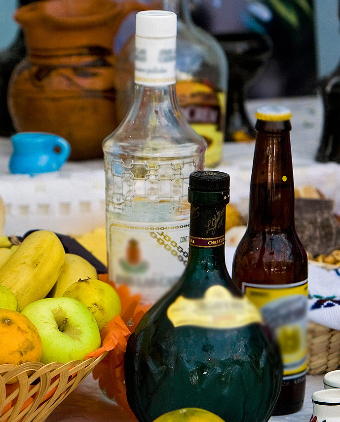

DÍA DE MUERTOS
Celebración tradicional mexicana que honra a los muertos.
Se celebran los días 1 y 2 de noviembre. Se acostumbra poner un altar con las comidas que mas le gustaban al difunto, junto con un retrato de el para recordarlo.

Elementos que no pueden faltar en el altar
Foto del Difunto

Pan de Yema

Calaveritas de Dulce

Flor de Cempasúchilt
Doce cirios

Papel Picado
Arco de caña y flores
Copal e incinso
Comida favorita del Difunto
Vaso de agua
Bebida favorita del difunto
